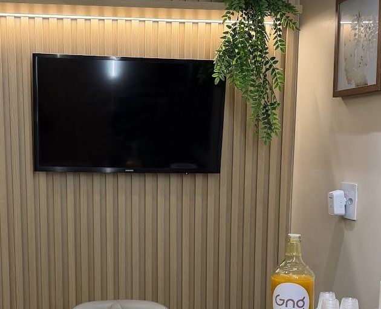

Início · Primeira consulta e como chegar
Primeira consulta: acolhida desde a recepção.
“Ótimo atendimento, desde da recepção a chegada a dentista”, diz um trecho em destaque na ficha da GNG no Google. Esta página mostra como agendar, como a primeira consulta costuma se organizar e como chegar.
Agendamento
Como agendar
Pelo WhatsApp da recepção, (71) 99311-9319. O atendimento é de segunda a sexta, das 8h às 17h, com hora marcada. A recepção combina dia e horário.

Passo a passo
Como é a avaliação
- AcolhidaA recepção confirma os seus dados e o motivo da visita.
- EscutaA conversa sobre o que trouxe você, a saúde geral e os tratamentos anteriores.
- ExameDentes, gengiva e mordida; pedido de exames de imagem quando necessário.
- ExplicaçãoO que foi encontrado e as opções, com o que cada uma pode e não pode fazer.
- PlanoAs etapas e a ordem do tratamento, ou os exames que faltam para decidir.
“Equipe técnica, atendimento humanizado e orientações claras.”Trecho em destaque na ficha do Google · ver na ficha
Preparo
O que levar
- Documento de identidade e, se for usar, a carteirinha do convênio.
- Radiografias e exames recentes, se tiver.
- A lista dos remédios que você usa.
- Informações sobre diabetes, pressão alta, problemas de coagulação ou alergias.
- As suas dúvidas, anotadas.
O perfil da clínica na Doctoralia cita Amil, Bradesco Saúde e Unimed. Confirme com a recepção antes da consulta.
Atendimento
Horário
Atendimento com hora marcada
Horário da ficha da clínica no Google. Atendimento com hora marcada — confirme com a recepção pelo WhatsApp.
Endereço
Como chegar
- Endereço: Rua Senador Theotônio Vilela, 225, Edifício Cidadela Center III, Brotas, Salvador – BA, 40279-435.
- WhatsApp da recepção: (71) 99311-9319.
- Na entrada: a parede viva verde com o logo “Gng” indica a recepção da clínica.
Dúvidas frequentes
Perguntas comuns
Atende aos sábados?
Pela ficha da clínica no Google, não: o atendimento é de segunda a sexta, das 8h às 17h.
Preciso marcar hora?
Sim. O agendamento é feito pelo WhatsApp da recepção.
Aceita convênio?
O perfil da clínica na Doctoralia cita Amil, Bradesco Saúde e Unimed. Confirme com a recepção.
A clínica fica em Brotas ou no Cidadela?
No Edifício Cidadela Center III, na Rua Senador Theotônio Vilela, 225 — região do Cidadela, que a ficha do Google registra como Brotas.
Agende
Comece por uma avaliação, com hora marcada.
Edifício Cidadela Center III, Rua Senador Theotônio Vilela, 225. Segunda a sexta, das 8h às 17h. A recepção combina dia e horário pelo WhatsApp (71) 99311-9319.